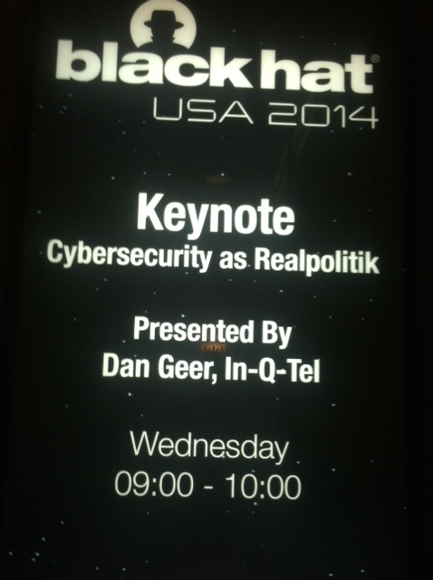

Black Hat Decomposed: Perspectives from a Social Scientist

by Andrea Little Limbago
This week I attended my first-ever Black Hat conference. As a social scientist, I was very intrigued to actually experience the culture of the conference, but anticipated being overwhelmed by the technical nature of the presentations. Little did I know that I was in for a very pleasant surprise during yesterday’s keynote address by Dan Geer, CISO at In-Q-Tel, entitled “Cybersecurity as Realpolitik”. While it appropriately remained very focused on the cybersecurity landscape, I couldn’t help but notice the underlying references and parallels that he drew from my world – the world of international relations and conflict studies. Below are a few of my favorite highlights of the presentation. Please keep in mind that these are based on my own note taking and perceptions – captured with a pen and paper, which I now know is clearly anomalous behavior.
1. Expected utility & rational choice – Before diving into his main argument, Geer referenced the use of funds to buy off adversaries during the Iraq War. This is improbable in the cyber landscape of non-attribution, but he notes the role of incentivizing to impact the cost-benefit calculus, as occurs in expected utility models. This notion of assuming rational actors and how to incentivize them reemerged during his discussion on vulnerabilities. This time he hypothesized ways to incentivize the security community to reveal known vulnerabilities, including the US government providing enormous financial rewards to disclose vulnerabilities. Geer references an Atlantic article, which notes that financial incentives will only work if the vulnerability landscape is sparse (as opposed to dense, or plentiful). A sparse landscape means that an individual vulnerability would represent a larger proportion of the entire population of vulnerabilities, vice a very dense population where revealing a single vulnerability would have little impact. In each of these instances, the key focus is on how to impact a person’s behavior through understanding and evaluating their risk preferences and motivations.
2. Cybersecurity’s unholy trinity? – In international economics, the unholy trinity (aka Mundell-Fleming model) represents the trade-offs between open capital flows, a fixed exchange rate, and an independent monetary policy. A state can only pursue two of the three – with each scenario inherently inducing distinct constraints on policy decisions. This came to mind as Geer noted that in cyberspace, a similar choice must be made between freedom, security, and convenience. Only two out of the three can exist, but not all three simultaneously. Unfortunately, users demand all three, and from my perspective, security frequently seems to be the lowest priority. This could very well be due to an inability to quantify the return on investment for security….which gets back to point number one.
3. Second-strike – Although Geer used the term ‘strike back’, I translate that quickly to second-strike, which seems identical. Second-strike gained prominence during the Cold War, and is a key component of mutually assured destruction, which rests on the ability of a state to maintain a second-strike posture – that is the ability to strike back after being hit by a nuclear weapon. Geer adopts this concept, and discussed the notion of cyber smart bombs, which he argues are extraordinarily difficult due to non-attribution within the cyber domain. Instead of focusing on second-strike, Geer argues actors (organizations, states, individuals, etc.) should focus on recovery due to the costs and adversarial identification required for cyber smart bombs.
4. A little bit of Churchill – Winston Churchill famously noted (to paraphrase) that democracy is the worst form of government except for all of the others. Geer provides us the cyber version of this quote, when he states (again, to paraphrase) that open-sourcing abandoned codebases is the worst option except for all of the others. This was part of Geer’s discussion of abandonment, when organizations no longer provide security updates for older versions of their software. This remains a problematic and lingering aspect of cybersecurity, without many effective solutions, as the quote insinuates.
5. Convergence or divergence? – Scholars have long debated whether the international system is moving toward a unified system with an overarching international government or whether it will devolve into an anarchic fragmented system. Geer also draws this analogy to cyberspace and asks whether it is headed toward a single system or a heterogeneous one broken into manageable chunks. While convergence is the natural flow, there could be significant power battles over on whose terms this unification occurs.
6. And a little bit of Weber – In a discussion on the growing inability of organizations to protect themselves, Geer referenced a Bloomberg article (possibly this one) that discussed a call by some of the large banks for assistance from the government for cybersecurity. Geer highlights the dependent nature of this relationship, wherein the only actors powerful enough to provide protection for these multi-national corporations are those with a monopoly on the use of force. According to Max Weber, this monopoly on the legitimate use of force is one of the defining characteristics of a state. This is an interesting juxtaposition after so much discussion of the demise of the nation state due to the borderless nature of cyberspace (as I’ve discussed in a previous post).
7. Complexity – In some of his concluding comments, Geer addressed the complex nature of cyberspace. The dynamism, scale, speed and scope of cyberspace – not to mention the intersection of the virtual and physical worlds – all compound to shape its complexity. While clearly there are differences, many of the same tenets exist in systems theory and structural functionalism. Pioneered by social scientists such as Talcott Parsons and Karl Deutsch, they view social systems as open and complex, and identify the various social functions that together comprise the whole system. In both cyberspace and social systems, complexity remains an underlying attribute, and practitioners and theorists alike will continue to pursue simplicity to advance our understanding of how these systems function.
Final thoughts: Geer began his presentation highlighting the growing role of cybersecurity within the policy domain. While understandably few and far between, I have found a couple of panels that focus on the intersection of policy and cybersecurity, addressing issues such as legal constraints and state-sponsorship of malware. For clearly selfish reasons, I hope this is just the beginning of a larger trend. As cybersecurity moves increasingly to the forefront of policy – as Geer elucidates – it only makes sense to innovate these kinds of discussions at conferences like Black Hat.